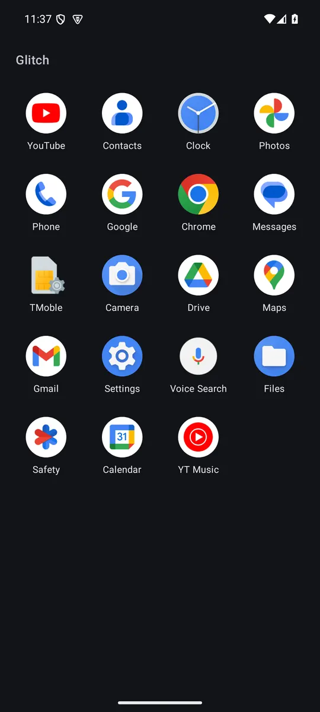
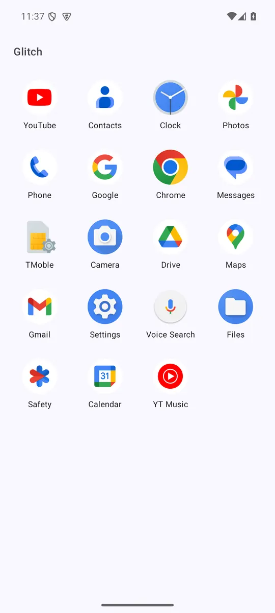
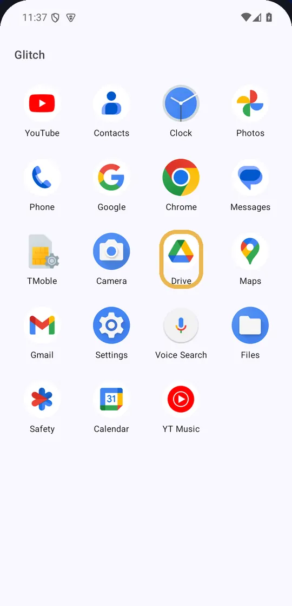

Glitch
Glitch the autopilot.
Look, then tap.
Your apps in a new order, so you look before you tap. Make Glitch your home screen and they reshuffle every time you unlock, with your everyday apps kept steady in a dock. Or just open it like any other app. You can switch back anytime.
Free No ads No permissions No tracking
Android 8.0 or newer · Release notes

How it works
Three steps. Set it up your way.
Your thumb knows where every icon lives. Glitch moves them, so you have to look for a second before you choose. Up to 4 apps you choose stay put in a fixed dock: by default phone, messages, camera and browser. Long-press any app to add it to the dock, remove it, or open App info.
-
Open Glitch, or make it home
Open it like any other app, or make Glitch your home screen so it's there every time you unlock. It's optional, and you can switch back anytime.
-

Look for your app
As an app, the order is new every time you open Glitch. As your home screen, it's new every time you unlock the phone, and going back to Home normally doesn't move anything. It stays put while you look, even if you rotate the phone.
-

Tap to open it
The app opens normally. Your apps get a fresh order next time you open Glitch or unlock your phone.
How to install
Install in about a minute
Glitch isn't on the Google Play Store yet, so you install it straight from this page. It works the same on Samsung Galaxy and other Android phones. Menu names can differ a little between phones.
-
Tap Download
On your phone, tap Download for Android. If your browser asks whether to keep the file, tap Download or Download anyway.
-
Open the file
Tap Open in the download message, or find glitch.apk in your browser's downloads or in the My Files app (Samsung) under Downloads.
-
Allow "Install unknown apps"
Android asks once whether your browser may install apps. Tap Settings, turn on Allow from this source, then go back.
On Samsung you can also find it in Settings › Apps › (your browser, e.g. Samsung Internet or Chrome) › Install unknown apps. You can turn it off again after installing.
-
Tap Install
Then tap Open. To use Glitch as an app, long-press its icon in your app drawer and choose Add to Home.
-
Make Glitch your home screen (optional)
In Glitch, tap Make Glitch your home screen and pick Glitch. Or open Settings › Apps › Choose default apps › Home app › Glitch.
To switch back, tap ⋮ next to the Glitch title and choose Change home app, or pick your previous home app (on Samsung, One UI Home) in the same Settings screen. Your old home screen and app drawer are just as you left them. On other phones the path is often Settings › Apps › Default apps › Home app.
Why your phone may show a warning
Android and Google Play Protect warn about apps that don't come from the Play Store, because they haven't checked them. That is a sensible default, and Glitch isn't on the Play Store yet. Glitch requests no permissions and has no internet access, so it can't send anything off your phone. Its full source code is public on GitHub, and every release is published there.
If Play Protect asks you to scan the app, let it. Only install a file you downloaded from this page or from github.com/benisalla/glitch/releases. To double-check a download, compare its SHA-256 with SHA256SUMS.txt on the release page. If Play Protect blocks the app, don't install it, and tell us.
Private by design
Nothing leaves your phone
Glitch only needs to know which apps you can open, to show them. It uses that list on your phone, while it's open, and nowhere else.
-
No permissions
Glitch asks Android for nothing, also as your home screen. It sees only apps that appear in a launcher, not everything installed.
-
No internet
The app has no internet access at all, so it can't send data anywhere.
-
No tracking, no ads
No analytics, no crash reporting, no third-party SDKs that collect data.
-
No accounts
Nothing to sign up for. Nothing is stored about you.
This website has no cookies, trackers or outside fonts either. Read the privacy policy.
Vision
A small, kind interruption
Your phone is designed to be tapped without thinking. One unlock to check the time turns into forty minutes of scrolling. Glitch is a small, kind interruption in that loop. Today it shuffles your apps, right on your home screen if you like, so you look before you choose. Next, it grows into gentle cues that you set up yourself.
Glitch is designed using research on attention, habits and ADHD-friendly design, for people with ADHD and anyone whose attention wanders quickly.
- Your words, not ours. Reminders are sentences you write, shown back to you when they matter.
- Always an exit. No lockouts, no streaks, no guilt. "Open anyway" is always one tap away.
- Kind and rare. Glitch must never become another thing that interrupts you.
- Private by design. No internet, no accounts, no analytics.
- Honest. It gives you a moment to notice. What you do with it is your call.
Coming next
A plan, not a promise of dates. Everything below "Available today" is planned and not available yet.
-
Available today
v1.1 · Glitch as your home screen
Optionally make Glitch your home screen: your apps reshuffle on every unlock, and a fixed dock keeps up to 4 everyday apps in place. Builds on v1.0's shuffle and light and dark themes. Still no permissions.
-
Planned
v1.2 · Intention moment
Mark the apps that pull you in, get a calm "Still want this?" pause with your own if-then plans, and switch to focus sets. Still no permissions.
-
Planned
v1.3 · Gentle cues
An optional, kind time reminder, a focus widget and a Quick Settings tile. Off by default.
-
Planned
v2.0 · Time awareness
Optional, on-device time in your noisy apps, and a first Scroll Glitch that shows your own reminder after a long short-video session, with Close, 5 more minutes and Pause today.
-
Planned · future
The Scroll Glitch
When you've slipped into endless Reels, Shorts or TikTok, Glitch steps in with a reminder you wrote and an easy way out. It will be a separate, opt-in companion app, so Glitch itself never needs accessibility access.
Glitch is not a medical device. It does not treat ADHD or any condition.
Open source
Free, open and built in public
Glitch is open source under the MIT License. Read the code, build it yourself, or suggest an idea.
Built by Ismail Ben Alla.